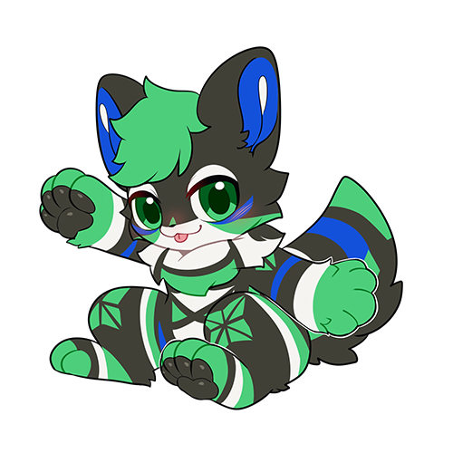
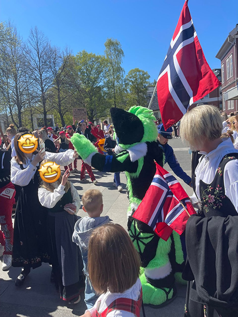
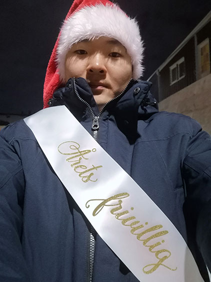

Im known for many things in my private life. Some good, some bad. "Energic Volunteer", "Furry Ambassador", "The Pianist", "The Wierdo", and "The Attention Seeker" are some of them. The important question is how you want to percieve me as.
I am a 26 year old student, currently enrolled at NTNU in Master of Industrial Innovation and Digital Security. I am expected to graduate at summer 2026. I am a higly energetic person with big ambitions for the future!
I have an unique hobby during the freetime. I am actively engaged in the Furry community, and after only a few years I have managed to be one of the most foremost furries in Norway. My furry characther (fursona) is named Kunai. It is a cute fox doing silly things. I also have a costume (fursuit) of my characther. With that, i can bring my passion about this hobby and at the same time bring smiles to people's faces, and giving them something truely magical and unique
 Other than that, I am also heavily invested in Volunteer Work. During my studies, I have been in several student organizations at the campus as well as the city's volunteer centre. My work to improve the student welfare, events, and and even at the volunteer centre has been recognised. As a result, I have been awarded The Volunteer of The Year 2023 at the Students House, and a signed diploma by the city's Mayor for my contribution!
